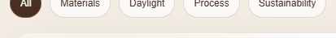
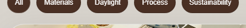
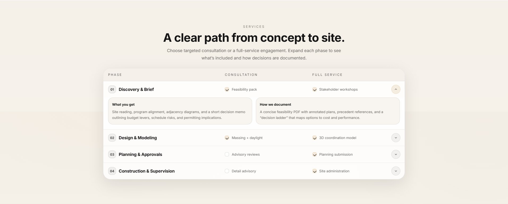
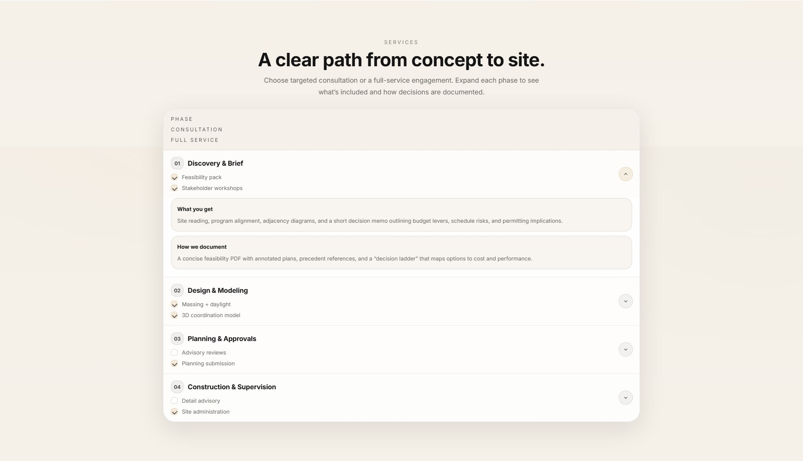
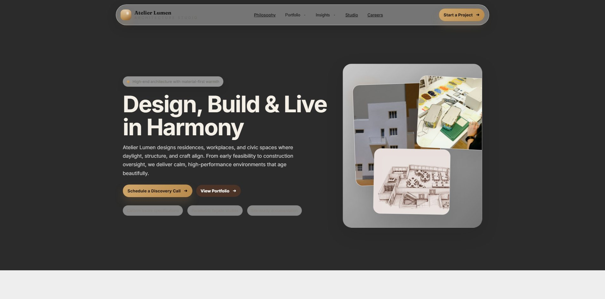

gpt-6.1-sol
反复重听和细抽帧之后，最终修改仍遗漏了撤销目标。
51条命令记录，36分33秒；22项定位／编辑／修订检查通过15项。
给Agent一份已有网页和一段中文讲解录屏，让它把语音中的“这个”“这些”与光标指向对齐，完成多步修改，并在反复撤销后保留最终有效意图。
中文录屏 4分03秒20条指令xhigh · 联网对建筑事务所的一份长网页做精确编辑。录屏中，用户一边滚动和指向页面，一边口述换位、配色、隐藏、删卡片、调整布局及恢复原样等要求。光标说明改哪里，语音说明怎么改。
完整时序与中文音轨的录屏预览 · 下载原始录屏
| 项目 | 设置 |
|---|---|
| 运行配置 | 三个模型均使用xhigh，在独立工作目录中完成任务。 |
| 输入 | 原始HTML、图片资源副本、243.2秒的带音轨中文录屏；语音内容由agent自行提取。 |
| 音画处理 | 自行用ffmpeg抽帧、裁剪、重听；可调用faster-whisper large-v3获取段级、词级时间标注。 |
| 工具 | Codex CLI 0.166.0-alpha.5.1；Python、Pillow、OpenCV、BeautifulSoup、Playwright及Chromium。 |
| 网络 | 全程允许联网，可安装依赖和获取素材。 |
| 运行边界 | 仅使用给定材料完成编辑，不读取其他工作目录、现成答案或评分标注；不额外限制总轮数、总时长和抽帧数。 |
| 交付 | 完整edited.html及使用的本地资源；三次运行均正常退出。 |
供读者查阅；运行时由agent从视频音轨恢复语音内容。
把这个改成左侧 logo、中间留空、右侧将所有菜单项和'Start a Project'按钮纵向堆叠的竖排布局 把这个和这个互换一下位置 把这个背景改成深炭灰色，这个文字改成米白色，这个改成浅灰色并移除这个的浅色阴影 把这个边框去掉，这个背景改成深棕色，这个文字改成白色 把这个移动到这个位置 把这个恢复成原来的样子 把这个改成单列纵向堆叠的布局 把这个改成玻璃幕墙高层建筑仰拍的静态照片 把这些全部隐藏掉 把这个背景改成浅米色和细深棕色边框，这个文字加粗并改为深棕色 把这个和这个互换一下位置 把这个和这个恢复成原来的位置，这个恢复成原来的样子 把这些改成深棕色 把这个改成两列网格布局 把这个移动到这个位置 把这个背景改成深棕色，这个文字改成亮金色，这些分隔线改为半透明金色 把这个直接删除掉 把这个背景改成深墨绿色，这个标题改成亮金色，这个文字改成浅灰绿色 把这个恢复成原来的样子 把这个和这个互换一下位置
交付可打开的完整网页，保留未被要求修改的内容和结构。撤销与恢复按最后有效意图处理；资源路径应可用，页面交互应保留。
20条指令中4条被后续撤销，剩16条最终有效操作。当前评分核验其中11条；另5条的指代范围或移动目的地存在歧义，未计通过或失败。定位、编辑落实、无损、修订的权重分别为10%、50%、20%、20%；裁判使用gpt-6-sol / high，并结合完整HTML及浏览器证据。
| 模型 | 得分 | 定位 | 编辑落实 | 无损 | 修订 | 求解耗时 |
|---|---|---|---|---|---|---|
| gpt-6.1-sol | 63.02 | 81.82 | 62.50 | 84.62 | 33.33 | 36分33秒 |
| gpt-6-astra | 61.00 | 81.82 | 62.50 | 74.51 | 33.33 | 20分09秒 |
| gpt-6.1-terra | 49.61 | 72.73 | 50.00 | 53.33 | 33.33 | 22分05秒 |
三份交付采用相同输入、工具环境与评分口径，各展示一份完整运行。得分及分项均为百分制；求解耗时包含工具调用和自检。评分口径：v3.1。
| 步骤 | 类型 | 最终要求 | gpt-6.1-sol | gpt-6-astra | gpt-6.1-terra |
|---|---|---|---|---|---|
| 1 | 定位 | 该元素应被识别并作为编辑目标 | ✗ | ✗ | ✗ |
| 1 | 编辑 | 第一屏顶部导航栏由当前一行横排的菜单项布局，改为左侧 logo、中间留空、右侧将所有菜单项和'Start a Project'按钮纵向堆叠的竖排布局 | ✗ | ✗ | ✗ |
| 6 | 定位 | 该元素应被识别并作为编辑目标 | ✓ | ✓ | ✓ |
| 6 | 撤销／恢复 | 撤回第3步的修改，将第一屏 HERO 区域配色恢复为原来的浅色背景、深色标题和正文 | ✗ | ✗ | ✗ |
| 11 | 定位 | 该元素应被识别并作为编辑目标 | ✗ | ✗ | ✗ |
| 11 | 编辑 | 将页面约25%处 PORTFOLIO 区域中第1个项目卡片'Ridgehouse Courtyard Residence'与第3个项目卡片'Riverline Civic Hall'的整个区块位置互换 | ✗ | ✗ | ✗ |
| 12 | 定位 | 该元素应被识别并作为编辑目标 | ✓ | ✓ | ✓ |
| 12 | 撤销／恢复 | 撤回第2步和第7步的修改，将 PHILOSOPHY 区域与 STUDIO 区域恢复原来的上下位置，并将 SERVICES 区域表头恢复为三列网格布局 | ✗ | ✗ | ✗ |
| 13 | 定位 | 该元素应被识别并作为编辑目标 | ✓ | ✓ | ✓ |
| 13 | 编辑 | 将页面约65%处 JOURNAL 内容区域顶部所有筛选按钮（All、Materials、Daylight、Process、Sustainability）的文字颜色改为深棕色 | ✗ | ✗ | ✗ |
| 14 | 定位 | 该元素应被识别并作为编辑目标 | ✓ | ✓ | ✓ |
| 14 | 编辑 | 将页面约65%处 JOURNAL 文章网格由当前的三列网格布局改为两列网格布局 | ✓ | ✓ | ✓ |
| 16 | 定位 | 该元素应被识别并作为编辑目标 | ✓ | ✓ | ✓ |
| 16 | 编辑 | 对页面最底部 FOOTER 区域进行批量修改：背景色由深黑改为深棕色，所有栏目标题'Explore / Studio / Scan'文字改为亮金色，所有链接文字下方的分隔线改为半透明金色 若Scan已因争议移动操作移出footer，不因其位置或footer缺少Scan标题单独判失败；检查保留的栏目及相应标题自身配色。 | ✓ | ✓ | ✓ |
| 17 | 定位 | 该元素应被识别并作为编辑目标 | ✓ | ✓ | ✓ |
| 17 | 编辑 | 删除页面约70%处 CASE STUDIES 区域中第5张卡片'Garden Stair • Multi-family Upgrade'整个案例卡片 | ✓ | ✓ | ✓ |
| 18 | 定位 | 该元素应被识别并作为编辑目标 | ✓ | ✓ | ✓ |
| 18 | 编辑 | 页面约40%处 AWARDS 奖项轮播区域配色修改：四张奖项卡片背景由深黑改为深墨绿色，卡片内标题文字改为亮金色，正文描述文字改为浅灰绿色 | ✓ | ✓ | ✓ |
| 19 | 定位 | 该元素应被识别并作为编辑目标 | ✓ | ✓ | ✓ |
| 19 | 撤销／恢复 | 撤回第8步的修改，将 PROJECT HIGHLIGHT 区域'Urban Oasis Tower'右侧背景图恢复为原来的图片 | ✓ | ✓ | ✓ |
| 20 | 定位 | 识别这两个岗位条目为交换目标。 | ✓ | ✓ | ✗ |
| 20 | 编辑 | 将OPEN ROLES列表中第一个Architectural Designer与第三个Materials & Sustainability Specialist岗位交换，BIM Coordinator仍居中；不要求外层careers/partners区块交换。 | ✓ | ✓ | ✗ |
悬停勾叉可查看理由；完整逐项结果可在下方下载。
使用实际交付HTML与资源；第三方远程图片可用性可能变化。原始提交保留在交付包中。
三次运行都有抽帧、转写和源码编辑，验证方式却不同：Sol反复重听并检查交互，Astra渲染检查后又修改颜色，Terra主要做结构静态检查。先看下面的过程摘要，再按需打开关键节点或全部记录。
反复重听和细抽帧之后，最终修改仍遗漏了撤销目标。
51条命令记录，36分33秒；22项定位／编辑／修订检查通过15项。
先做浏览器检查，再进行一次没有重新渲染的收尾改色。
30条命令记录，20分09秒；22项任务检查同样通过15项，失败项与Sol完全一致。
主要依靠转写、片段截图和源码静态检查，最终交换了不同层级的区块。
18条命令记录，22分05秒；22项任务检查通过13项，招聘岗位交换也未完成。
总结依据可见命令、工具输出和最终交付整理；不推测隐藏推理。保留全部原事件顺序，关键节点带编辑说明及原始命令，便于追溯。
Astra最初写入 #journal .filt{color:#4A3024}。其后执行浏览器检查：没有页面脚本错误，文章区为两列，资源路径也存在。随后它又把这条规则替换成“深棕背景＋白字”，并把背景选择器从首屏扩大成 body, .hero。在这次修改之后，可见轨迹只有交付消息，没有新的浏览器检查。证据：Astra #32 → Astra #34 → Astra #35。
按照最后两条字符串替换逆向还原检查前版本，再用同一浏览器计算颜色：四个非选中项由深棕字变成白字，原本白字的All仍为白字。也就是说，这一步扩大了不满足颜色要求的范围；全局背景修改同时带来额外无损扣分。这里能定位到“检查后又改动”的过程缺口，但轨迹没有说明改色动机，不能把动机当成事实。


可推广的检查点：最后一次写入之后，重新验证受影响属性及其作用范围。已通过的页面检查只对应当时版本。
目标是交换PORTFOLIO第一、第三个完整项目。Sol脚本明确写着“Swap the first two portfolio projects”，最后变为Atlas → Ridgehouse → Riverline；Astra只给第一张卡片里的图片设 order:-1，改变了卡片内部图文顺序；Terra的项目顺序未变，却把Urban Oasis与Studio整段对换。相同表面操作落在了相邻项目、卡片子元素、页面区块三个不同层级。
| 模型 | 实际交付 | 定位错误 | 依据 |
|---|---|---|---|
| Sol | 交换第1、2项目 | 对象层级正确，第二个对象选错 | Sol #52、Sol #53 |
| Astra | 首卡片图片移到文字前 | 把完整项目误落到卡片内部 | Astra #32 |
| Terra | 交换Urban Oasis与Studio | 修改了另一对页面区块；岗位也未交换 | 交付代码与浏览器顺序、Terra #21 |
这说明不能只确认“执行了交换”。验收需要同时绑定两个稳定对象和它们的父容器。Sol、Astra在更细的招聘列表里都正确交换了首、第三岗位，也表明它们具备做换位的能力；本例更值得追问的是为什么在长页滚动和相似卡片之间没有保持对象身份。Terra的具体两次指代如何导致整段换位，现有轨迹不足以还原其内部决策。
Sol在Sol #34再次打印了138–146秒的两条恢复指令，又在Sol #46按约0.2秒间隔细抽恢复片段。Astra也对142–146秒片段按0.25秒抽帧（Astra #24）。因此，至少这两次运行不能解释成根本没有读取恢复要求。
但最终三份交付均保留深色首屏和单列SERVICES表头；原表头为三列。可见源码仍追加了深色配色及 grid-template-columns:1fr。更窄、也更有证据支持的结论是：已获取的撤销信息没有稳定地落实到对应元素的最终状态。错误可能出在撤销指代绑定，也可能出在整理修改计划后没有删除旧规则，现有可见记录不能把两者完全分开。
更有用的验证方式：给“恢复原样”保留一个明确的原始值，再检查最终计算值。仅在计划文字中标记“已处理撤销”，无法验证恢复是否真的生效。
Sol的最终脚本检查了删卡片、折叠展开、筛选结果数量；日志随后宣称连项目／岗位顺序都已验证。然而该脚本没有目标项目顺序断言，也没有SERVICES三列或筛选文字颜色断言。较早的浏览器输出其实已经列出Atlas → Ridgehouse → Riverline，却未与目标顺序比较。证据：Sol #53、Sol #55、Sol #57。
其中一次文章数量断言失败，是网页240ms筛选动画尚未结束。Sol读取原脚本、增加300ms等待后保留原断言并通过，这是一次有效的测试时序修复；它并不能同时证明布局与配色已正确。Astra的自检同样覆盖两列文章和资源路径，但没有对恢复目标作断言；Terra的可见检查主要打印结构数量和section顺序，未见浏览器渲染命令。
本例的差别在“测了什么”。可操作的改进是把每条请求映射为对应验收：交换测身份和顺序，撤销测原值，颜色测计算样式，交互测状态变化。
Sol用36分33秒、留下51条命令记录；Astra用20分09秒、留下30条。两者22项定位／编辑／修订检查都是15项通过、7项失败，而且失败ID完全一致。63.02与61.00的2.02分差，全部来自权重20%的无损项：84.62与74.51。
因此，这次总分差并不是Sol多完成了某项请求，而是两份交付的额外变化不同。例如Astra把两张未被要求替换的评价图片映射成了不同内容；Sol保留了这些图片内容。对比命令量可以解释成本，却不能直接解释任务完成度；本页只有各模型一次展示运行，也不足以据此推断稳定的效率排名。




录屏、原始网页和图片的来源及授权说明见素材来源与许可；第三方内容保留各自许可。
更新：2026-11-04 11:27:57（北京时间）